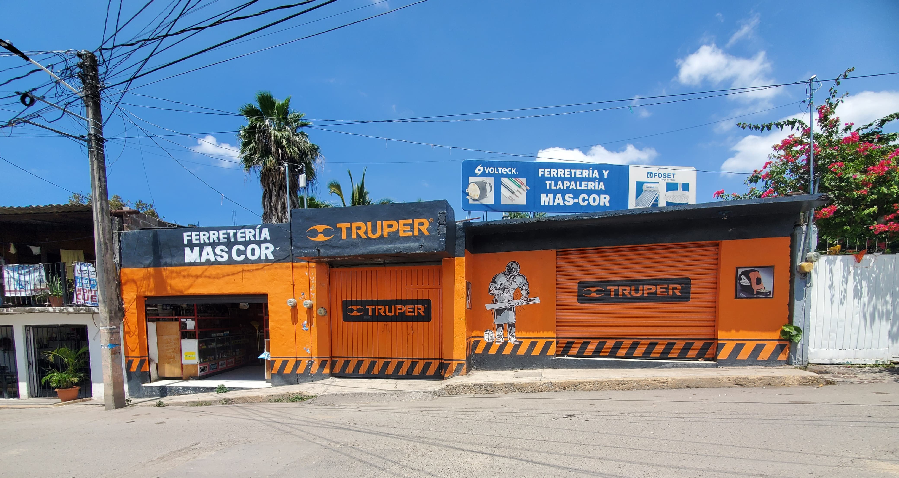
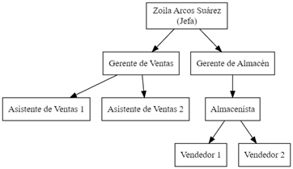

Sobre Nosotros
MASCOR es una ferretería y tlapalería con más de 9 años de experiencia, ofreciendo productos de calidad para todas tus necesidades de construcción, reparación y mantenimiento.
Acerca de MASCOR
Valores
En MASCOR, nuestros valores fundamentales son la honestidad, la calidad y el servicio al cliente. Nos comprometemos a ofrecer productos de alta calidad y un servicio excepcional.
Misión
Nuestra misión es ser la ferretería y tlapalería de confianza para nuestros clientes, proporcionando soluciones efectivas y productos de calidad para todos sus proyectos de construcción y mantenimiento.
Visión
Nuestra visión es expandir nuestra presencia en el mercado, innovando continuamente y mejorando nuestra oferta de productos y servicios para satisfacer las necesidades cambiantes de nuestros clientes.
Organigrama
El organigrama de MASCOR muestra la estructura de nuestra empresa, destacando los diferentes departamentos y funciones clave que aseguran el funcionamiento eficiente de nuestro negocio.
Tipo de Liderazgo
En MASCOR, promovemos un estilo de liderazgo colaborativo y orientado a resultados. Creemos en la importancia de inspirar y motivar a nuestro equipo para alcanzar metas comunes, fomentando un ambiente de trabajo inclusivo y respetuoso.
Productos y Servicios
Ofrecemos una amplia gama de productos y servicios, incluyendo herramientas, materiales de construcción, productos de plomería y mucho más.
Herramientas
Amplia variedad de herramientas para todas tus necesidades.
Materiales de Construcción
Materiales de alta calidad para tus proyectos de construcción.
Productos de Plomería
Todo lo que necesitas para reparaciones y mantenimiento de plomería.
Conoce el nuevo surtido de herramientas para carpinteria
Motivación
La motivación es un factor clave para el éxito de cualquier organización. En MASCOR, creemos en la importancia de mantener a nuestro equipo motivado a través del reconocimiento, incentivos y oportunidades de desarrollo profesional.
Resolución de Conflictos
La resolución efectiva de conflictos es esencial para mantener un ambiente de trabajo saludable. Fomentamos la comunicación abierta y respetuosa para abordar y resolver cualquier desacuerdo dentro de la organización.
Equipos de Alto Rendimiento
Nuestro enfoque en el desarrollo de equipos de alto rendimiento se basa en la colaboración, la confianza y la alineación de objetivos comunes. Esto nos permite alcanzar resultados excepcionales y superar las expectativas de nuestros clientes.
Toma de Decisiones
La toma de decisiones en MASCOR se basa en un análisis riguroso y una evaluación cuidadosa de todas las opciones. Promovemos la participación del equipo en el proceso de toma de decisiones para asegurar que se consideren diversas perspectivas.
Clasificación de los Grupos
Entendemos la diferencia entre un grupo y un equipo de trabajo. Mientras que los grupos pueden trabajar de manera más independiente, nuestros equipos están diseñados para colaborar estrechamente y alcanzar metas compartidas con mayor eficiencia.
Relaciones Interpersonales y Desarrollo de Equipos
En MASCOR, valoramos las relaciones interpersonales positivas y fomentamos el desarrollo de equipos a través de la formación continua, actividades de team building y un ambiente de trabajo inclusivo y respetuoso.
Contacto
Para más información, visítanos en nuestra tienda o contáctanos a través de nuestros canales de comunicación.
Dirección: Calle Morelos #8, Jiutepec, Morelos, México
Teléfono: +52 777 222 222 2
Síguenos en nuestras redes sociales:
Facebook Instagram Twitter